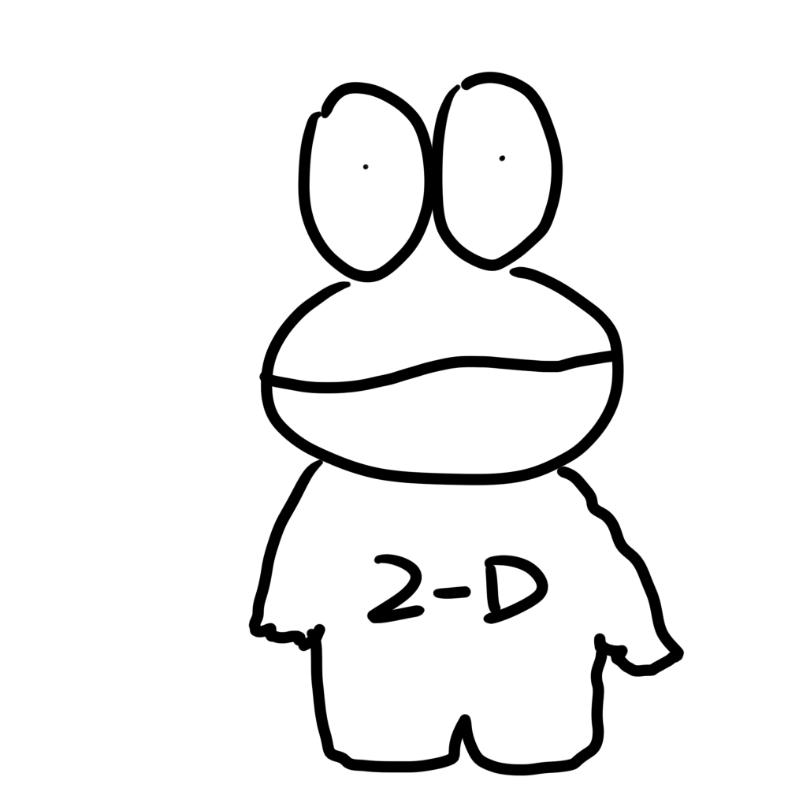

OFFICIAL MASCOT CHARACTER
ディピョン丸の部屋

ディピョン丸
Dipyon-maru
星野製作所の公式マスコットキャラクター。好奇心旺盛で、いつも目を丸くして面白いモノを探している。胸に書かれた「2-D」の文字の秘密は、平面（2D）の図面からモノづくりが始まることをリスペクトしているから…らしい？
- 誕生日 4月20日
- 好きなもの 設計図、ウェブサイトの裏側
- 特技 虫取り
ディピョン丸 誕生のひみつ
01
始まりはふとしたアイデア
ディピョン丸はクラスTシャツのデザイン募集で偶々当たってしまったキャラクターです。。シンプルな線画ながら、どこか憎めない大きな目が特徴です。
02
名前と「2-D」の由来
ディピョン丸という独特な名前は、クラスLINEにて一般公募した際、大阪県様がチャットgptにて相談した結果出てきた名前です。一般公募といえど大阪府様しか反応してくれなかったため名前だけAI由来になってしまいました。2-Dはそのまま2年D組ということです。。
03
そして公式マスコットへ
いつしか開発陣の中で愛着が湧き、気がつけば公式特設ページが作られるほどのマスコットに昇格。今後は星野製作所の顔として、様々なコンテンツで案内役として活躍する予定です。
ディピョン丸の活動記録
Now Loading...
今後の活躍にご期待ください！